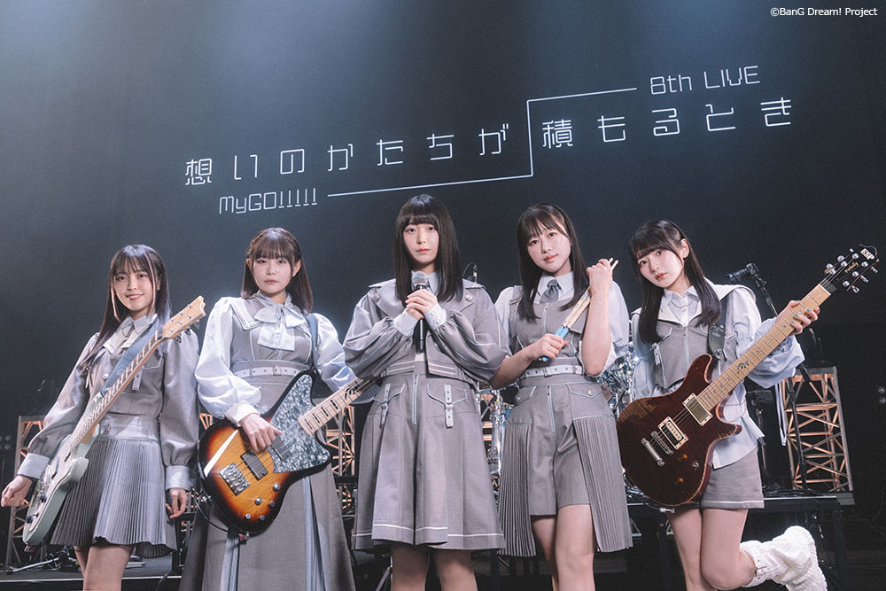
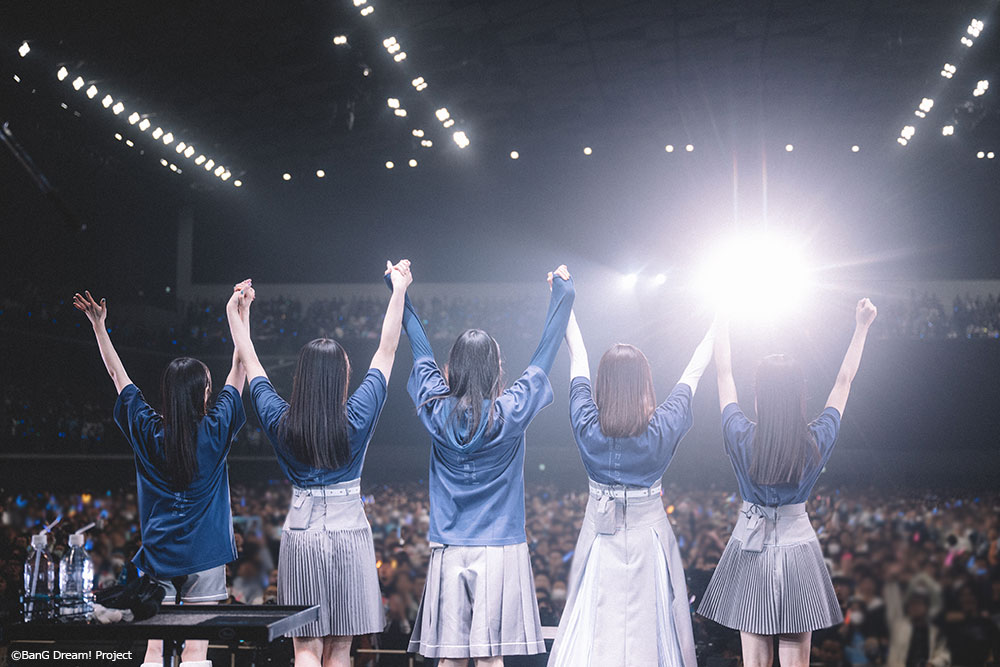

RT @aniverse_brs: MyGO!!!!! 8th LIVE「想いのかたちが積もるとき」レポート！
「エガクミライ」「明弦音」「静降想」の初披露を含む過去最大楽曲数の17曲を熱演！
次回単独ライブなど新情報も解禁！
https://t.co/3MlVtCrbbR …
「エガクミライ」「明弦音」「静降想」の初披露を含む過去最大楽曲数の17曲を熱演！
次回単独ライブなど新情報も解禁！
https://t.co/3MlVtCrbbR …

